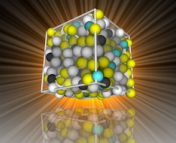

The Glass Transition
Famously described by Nobel Laureate Philip Anderson as "the deepest problem in solid state physics", the mechanism by which the viscosity of supercooled liquids increases by many orders of magnitude is a scientific revolution in the sense of Thomas Kuhn. Our understanding of the glass transition is hampered by the difficulty in discriminating apparently incompatible theoretical approaches which nevertheless provide equally good descriptions of experimental data: which theory should we believe?
To answer this question, the challenge lies in equilibrating samples sufficiently high viscosity - and therefore long relaxation times - that experimental or numerical techniques can probe suitable quantities that enable the theories to be discriminated. Recently, considerable progress has been made in obtaining data which can help such discrimination, in both experiments and simulation [1].
Much of these new data tend to support theories which imagine a thermodynamic origin of the glass transition - in contrast to a predominately dynamic origin [2,3].
Nevertheless, plenty of compelling evidence in support of dynamic facilitation (which posits that the glass transition is driven by a dynamical phase transition) exists [4], which we have shown can be accessed in experiments [5].

Using novel techniques to obtain very deeply supercooled configurations in an atomistic model glassformer, we have made significant progess in addresing this question [1].
These naturally lend themselves to a determination of the dynamical phase transition of facilitation [9,10]. We find that the dynamical phase transition has a lower temperature bound, which we interpret as a critical point [9,11].
Now our deeply supercooled configurations also give access to the configurational entropy, from which we can locate the Kauzmann temperature [3].
Remarkably, within the accuracy of our approach, this point where the thermodynamic theories suggest a phase transition lies at the same temperature as the lower critical point of the dynamical transition [11].
Our findings lead to a path to reconcile the competing thermodynamic, frustration and dynamic interpretations of the glass transition [1,12].
References
- Ortlieb L, Ingebrigtsen TS, Hallett JE, Turci F & Royall CP, "Probing excitations and cooperatively rearranging regions in deeply supercooled liquids", Nature Commun. 14 2621 (2023) link to PDF[cite: 3]
- Leoni F, Martelli F, Royall CP & Russo J, "Structural signatures of ultrastability in a deposited glassformer", Phys. Rev. Lett. 130 198201 (2023). link to PDF[cite: 3]
- Luo C, Robinson JF, Pihlajamaa I, Debets VE, Royall CP & Janssen LMC, "Many-Body Correlations Are Non-negligible in Both Fragile and Strong Glassformers", Phys. Rev. Lett. 129 145501 (2022). link to PDF[cite: 3]
- Hallett JE, Turci F & Royall CP, "The Devil is in the Details: Pentagonal Bipyramids and Dynamic Arrest", accepted by J. Stat. Mech.: Theory and Experiment 014001 (2020). link to PDF[cite: 3]
- Ingebrigtsen TS, Dyre JC, Schroder TB and Royall CP, "Crystallisation Instability in Glassforming Mixtures", Phys. Rev. X 9, 031016, (2019) PDF download.
- Royall CP, Turci F, Tatsumi S, Russo J & Robinson J, "The race to the bottom: approaching the ideal glass?", J. Phys.: Condens. Matter 30 363001 (2018). Link to paper.
- Turci F, Tarjus, G & Royall CP, "From Glass Formation to Icosahedral Ordering by Curving Three-Dimensional Space", Phys. Rev. Lett., 118, 215501 (2017). Link to paper.
- Hallett JE, Turci F and Royall CP, "Local structure in deeply supercooled liquids exhibits growing lengthscales and dynamical correlations", Nature Comms 9 3272 (2018). Link to paper.
- Speck T, Malins, A & Royall CP "First-Order Phase Transition in a Model Glass Former: Coupling of Local Structure and Dynamics" Phys. Rev. Lett. 109, 195703 (2012). Link to paper.
- Pinchaipat R, Campo M, Turci F, Hallett J, Speck T & Royall CP "Experimental Evidence for a Structural-Dynamical Transition in Trajectory Space", Phys. Rev. Lett., 119, 028004 (2017). Link to paper.
- Turci F, Royall CP & Speck T. "Non-Equilibrium Phase Transition in an Atomistic Glassformer: the Connection to Thermodynamics" Phys. Rev. X, 7 031028 (2017). Link to paper.
-
Lang D, Scalliet C & Royall CP,
"Anti-correlation between excitations and locally-favored structures in glass-forming systems",
Phys. Rev. E 111 055415 (2025). Link to paper.